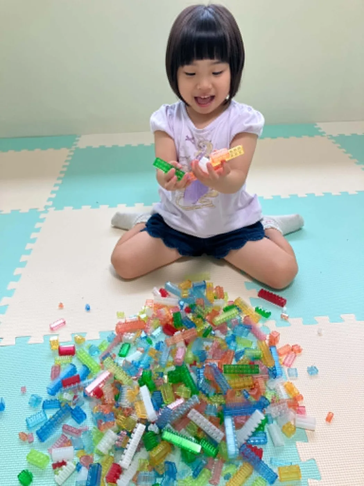
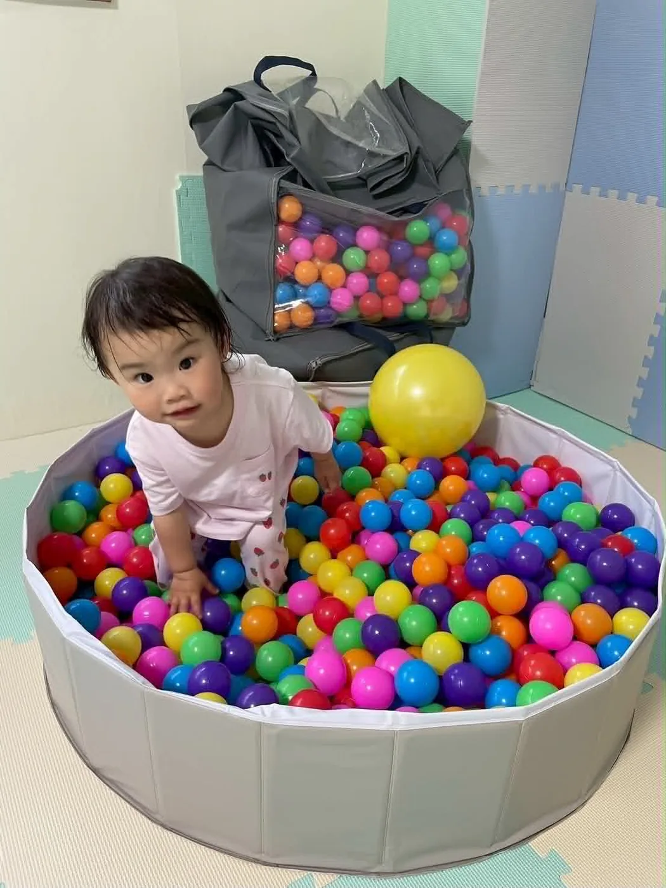

Program
療育プログラム
1対1を中心とした個別〜小集団の療育支援を行っています。
子どもたち一人ひとりに合わせた、オーダーメイドなプログラムを提供します。
Approach3つの円で、皆さまの
3つの円で、皆さまの
「子育て」をサポート
身体づくり
感覚遊びや運動遊び、感覚統合を通じて、からだの土台をつくります。
心と
コミュニケーション
心理師や精神科経験のある作業療法士が、心理面やコミュニケーションをサポートします。
生活の困りごとの解決
トイレや着替えなどの生活動作ができるよう、環境面も含めてサポートします。

Individual & Group
個別療育と小集団療育
ご家族の希望や現状・目標に合わせて、マンツーマンの個別支援と、2〜3名で構成する小集団療育を組み合わせます。
個別支援
一人ひとりの課題にじっくり。
小集団療育
2〜3名で、関わり・社会性を育てる。
Program
オーダーメイドの個別療育
01
遊びを通じた身体づくり
子どもたちにとって遊びは、成長するために欠かせない貴重な栄養源です。いろいろな遊び方に精通している保育士と、遊びの治療的活用に長けている作業療法士がタッグを組んで、生活の基本となる身体づくりにつなげていきます。
02
心とコミュニケーション
からだと心は密接に関連しています。からだの基礎ができるとこころが安定し、周囲と良好なコミュニケーションを取る準備が整います。まずはマンツーマンからはじめることで適切に現状を把握して対応し、少しずつ関わる人数を増やしていきます。
03
生活の困りごとの解決
私たちの毎日は、食事やトイレ、着替えなど多くの作業でつくられています。作業を毎日続けると習慣になります。普段の生活で自分のできることが増えると自信がつき、暮らしに彩りができます。当たり前にとらわれず、手段を問わずに「まずできること」を目指します。
Program
1時間の短期集中プログラム
メロウキッズは、1時間の短期集中プログラムとなっております。
① 9:00 – 10:00
② 10:30 – 11:30
③ 13:30 – 14:30
④ 15:00 – 16:00

Seminar
セミナー開催
島内外から講師を招いて、定期的にセミナーを開催しています。
ご家族や支援者をはじめ、地域の皆さまで学べる場を提供します。